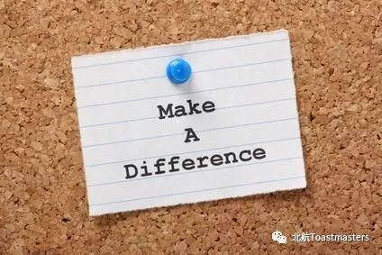
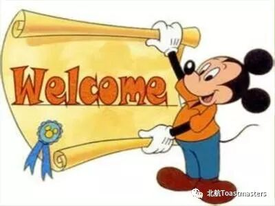
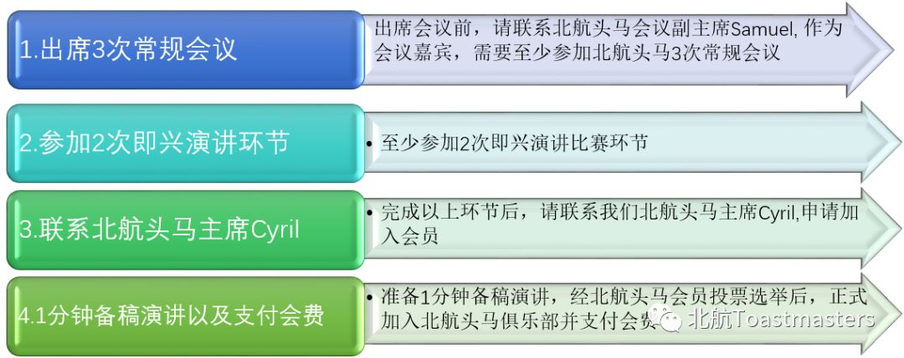

北航Toastmasters国际英语演讲俱乐部是一个面向校内外提供专业化，高标准英语的交流平台，旨在提升公共演讲能力、培养团队精神与领袖气质，结识校内外、国内外朋友。北航Toastmasters已经有近3年的成长经验，享受微软、IBM等多个企业Toastmasters俱乐部的支持，并承袭Toastmasters International总部80年的优良传统，努力做好服务学生服务社会的非营利组织。
活动地点：北航新主楼 A218（具体以公众号推送为主~）
会员与非会员到底有什么区别呢？

简单来说,会员可以在会议中得到更多的锻炼机会。根据头马国际英语演讲俱乐部的培训制度以及体系,会员可以担任会议主持人、主持游戏、即兴演讲主持人、做备稿演讲、担当时间官、语法官、演讲评估人、总会议评估人等角色,每个角色锻炼的侧重点都不同;俱乐部中有一个领导团队,包括主席、教育副主席、会员副主席、公关副主席、财务、秘书、接洽外联等,半年一届,每一个会员都有机会竞选担任;会员有机会参加由 头马俱乐部中国大区一年两度的演讲比赛,胜出都更有机会去美国总部参赛。会员还可以参加俱乐部定期聚会以及其他活动。
非会员作为嘉宾，虽然可以自由参会,参与会议中游戏和即兴演讲环节,聆听会员们的备稿演讲和点评环节等,但不能像会员一样有系统的提升自己演讲能力,不能在会议中担任角色,以及得到充分的反馈和建议等。
此外,北航头马俱乐部是一个全球的会员体系,除了享受总部资料、官网资料以外,还是一个全球的学习交流平台。很多高校以及世界500强企业都有自己内部的头马俱乐部，如:哈佛大学,哥伦比亚大学等各高校,以及微软、汇丰银行、摩根士丹利等,尤其是对需要去外企面试的同学来说, 头马俱乐部员往往会为其增添一块敲门砖。
如果你想成为会员的话， 你需要和俱乐部内部人员沟通，申请入会。
. . . . . . . . . . . . . . .


首先来参加会议就可以啦！不用做特别准备。在会议开始后，主持人需要你举手做一次简单的自我介绍。抓住机会，努力地迈出第一步吧！
所以，还在等什么？？？赶紧来加入我们吧~~！！！长按下图的二维码，关注我们的公众号，每周会推送活动的时间地点和主题
公众号：北航Toastmasters
在这里，我们一起成长，一起学习演讲，学习英语，提高领导能力，结识一群志同道合来自五湖四海的朋友，收获颇丰。
也许，我们不是最会说但一定是最敢说
我们会怀着感恩的心
陪着头马 慢慢变老
Toastmasters International (TI) is a nonprofit educational organization that operates clubs worldwide for the purpose of helping members improve their communication, public speaking, and leadership skills.
You can find us by the following map of Beihang University.

https://mp.weixin.qq.com/s/XLLLQUK0pG8u367lFBQorg
本页为抢救式本地归档，图文已永久保存。